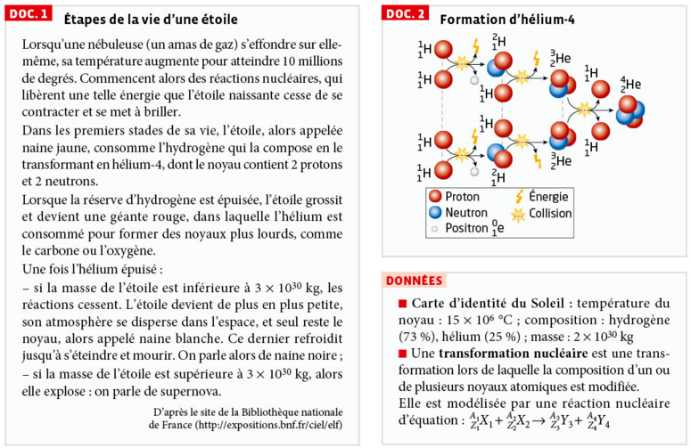
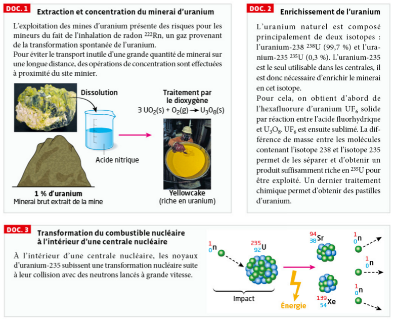
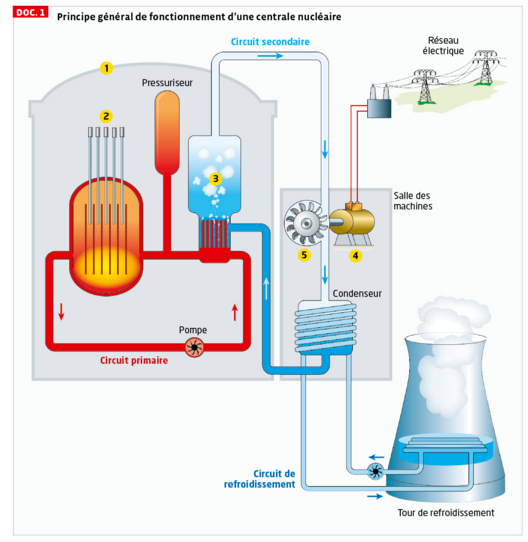
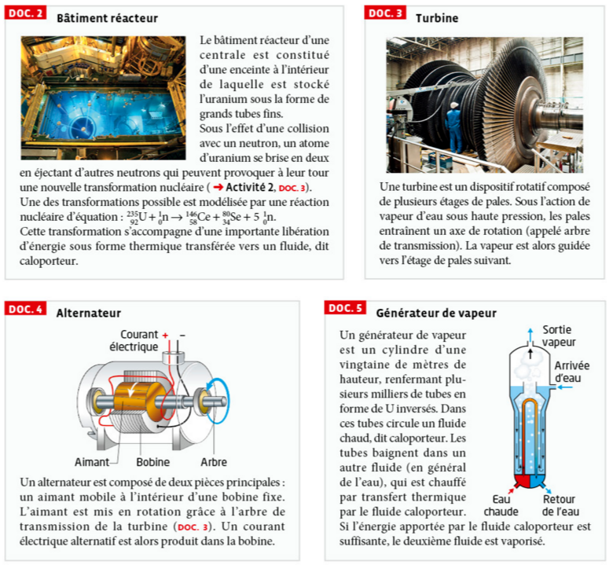
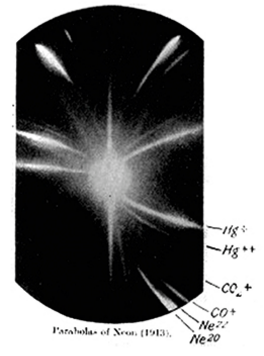
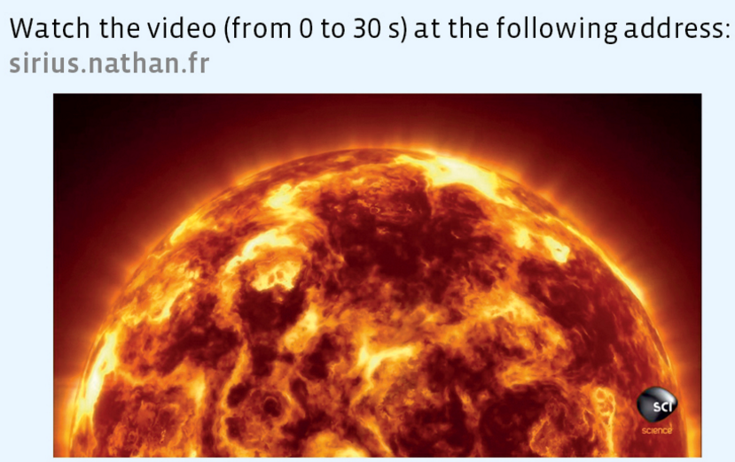
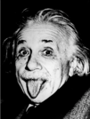
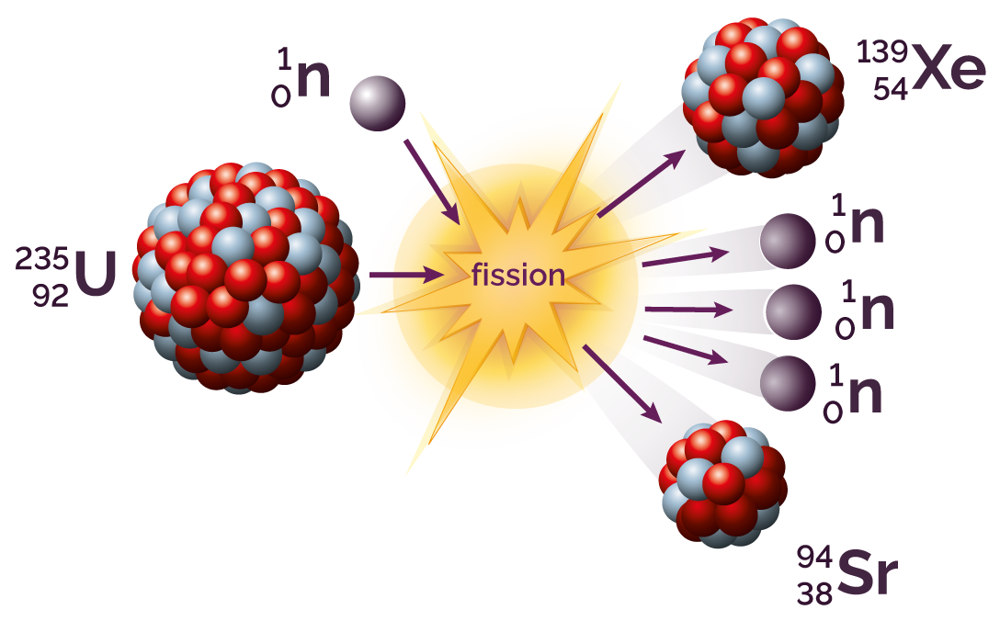
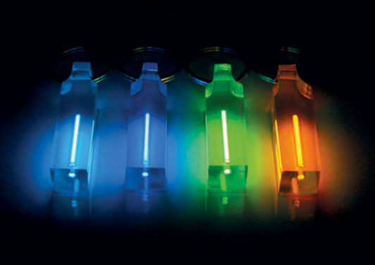
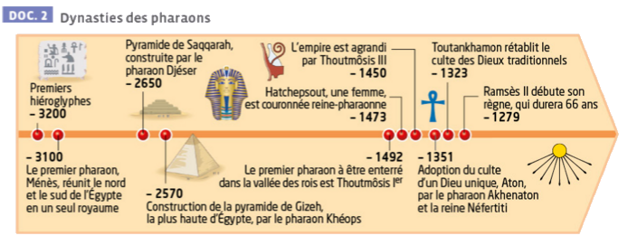

Transformation nucléaire
Thème : Constitution et transformations de la matière · C. Poirault-Gauvin
- Identifier des isotopes.
- Établir, à partir des noyaux père et fils, l'équation de la réaction nucléaire associée.
- Relier l'énergie convertie dans le Soleil et dans une centrale nucléaire à des réactions nucléaires.
- Identifier la nature physique, chimique ou nucléaire d'une transformation à partir de sa description ou d'une écriture symbolique.
1. Qu'est-ce que la radioactivité ?
Un noyau père instable se désintègre spontanément en émettant un noyau fils, une particule et un rayonnement électromagnétique γ.
C'est la grande énergie des particules émises qui a permis de comprendre, dès la découverte de la radioactivité par Becquerel en 1896 puis expliquée par Pierre et Marie Curie, que la radioactivité est un phénomène nucléaire (transformation du noyau) et non chimique.
Nature d'une transformation
Pour chaque situation, identifier la nature de la transformation :
2. Les isotopes
Ils appartiennent au même élément chimique : propriétés chimiques identiques, propriétés physiques différentes.
Exemple : 126C, 136C et 146C sont les trois isotopes du carbone. Ils ont tous Z = 6 protons.
Exercice – Identifier des isotopes
Les noyaux suivants sont-ils des isotopes du carbone (Z = 6) ?
| Noyau | Z | A | Isotope du carbone ? |
|---|---|---|---|
| 126C | 6 | 12 |
|
| 147N | 7 | 14 |
|
| 146C | 6 | 14 |
|
| 168O | 8 | 16 |
|
3. Stabilité des noyaux – Diagramme de Ségré
Le diagramme (N, Z) ou diagramme de Ségré représente les noyaux en fonction de leur nombre de neutrons N (abscisse) et de leur nombre de protons Z (ordonnée). Il indique la nature de l'instabilité de chaque noyau.
Lorsqu'un noyau est instable, il expulse spontanément une particule et émet un rayonnement gamma de grande énergie.

Source : simulation interactive web-labosims.org
Lois de conservation – Lois de Soddy
La somme des nombres de masse A des réactifs = La somme des nombres de masse A des produits
La somme des nombres de charge Z des réactifs = La somme des nombres de charge Z des produits
Énergie libérée par une réaction nucléaire
Une réaction nucléaire s'accompagne d'une perte de masse (défaut de masse |Δm|) qui se traduit par une libération d'énergie :
avec c = 3,00 × 10⁸ m·s⁻¹ et Δm en kg, E en joules.
Exercice 1 – Compléter l'équation de désintégration du radium
Le radium-226 se désintègre en émettant un noyau de radon et une particule. Compléter A et Z du noyau de radon :
22688Ra → Rn + 42He
Conservation de Z : 88 = Z + 2 → Z = 86.
Le noyau fils est le radon-222 : 22286Rn.
Application interactive – Réaction en chaîne
Simule une réaction en chaîne : chaque fission libère 3 neutrons qui peuvent déclencher d'autres fissions. Ajuste le facteur de multiplication k et observe si la réaction s'emballe, se stabilise ou s'éteint.
📊 État de la réaction
Génération : —
Noyaux fissionnés : —
Énergie (×10⁻¹¹ J) : —
—
k = 1 : critique (réaction stable)
k > 1 : sur-critique (emballement !)
La fission nucléaire
Les centrales nucléaires produisent de l'électricité grâce à l'énergie dégagée par la fission de noyaux d'uranium.
Équation de fission de l'uranium-235
Conservation : A : 1+235 = 94+139+3×1 = 236 ✔ | Z : 0+92 = 38+54+0 = 92 ✔
Exercice – Vérifier les lois de Soddy
Une autre réaction de fission possible de l'uranium-235 produit du baryum-141 et un noyau inconnu, ainsi que 3 neutrons. Retrouver A, Z et le symbole chimique du noyau manquant en appliquant les lois de conservation.
Conservation de Z : 0 + 92 = 56 + Z + 0 → Z = 92 − 56 = 36.
Z = 36 correspond au Krypton : le noyau manquant est 9236Kr.
Vérification A : 1+235 = 141+92+3 = 236 ✔ | Z : 0+92 = 56+36+0 = 92 ✔
Animation – Fission de l'uranium-235
Exercice – Compléter une équation de fission
La fission de l'uranium-235 peut aussi produire du césium-137. Compléter l'équation en trouvant A et Z du noyau manquant, puis identifier l'élément.
Conservation de Z : 0 + 92 = 55 + Z + 0 → Z = 92 − 55 = 37.
Z = 37 correspond au Rubidium : le noyau manquant est 9737Rb.
Vérification A : 1+235 = 137+97+2 = 236 ✔ | Z : 0+92 = 55+37+0 = 92 ✔
La fusion nucléaire
L'énergie libérée par notre Soleil provient de réactions de fusion nucléaire. C'est la première réaction pour la création d'hélium dans notre Soleil :
Équation de fusion dans le Soleil
Conservation : A : 1+1 = 2+0 = 2 ✔ | Z : 1+1 = 1+1 = 2 ✔
Animation – Fusion nucléaire
Exercice – Compléter l'équation de fusion
Dans la réaction de fusion ci-dessus, identifier A et Z du noyau de deutérium produit :
11H + 11H → H + 0+1e
Conservation de Z : 1 + 1 = Z + 1 → Z = 1.
Le noyau produit est le deutérium : 21H.
Application : Découverte des isotopes – Marie et Pierre Curie
Marie Curie, alors doctorante dans le laboratoire d'Henri Becquerel, a travaillé sur le rayonnement émis par des minerais d'uranium. Elle remarque avec son mari Pierre qu'après avoir séparé l'uranium de toutes les impuretés, celles-ci émettaient encore un rayonnement plus intense que celui de l'uranium isolé. Plus tard, ils identifieront deux éléments responsables de ce rayonnement : le radium et le polonium.
Question 1 – Schéma de la chaîne radioactive
Représenter sous forme de schéma la chaîne radioactive allant du radium au polonium. On notera AZX le noyau intermédiaire. Compléter A et Z de ce noyau :
Conservation de A : A(X) = 218 + 4 = 222.
Conservation de Z : Z(X) = 84 + 2 = 86.
Le noyau intermédiaire est le radon-222 : 22286Rn.
Question 2 – Nature de la première désintégration
À l'aide des lois de conservation, identifier la nature de la première désintégration (Ra → X) :
Données : Ra → A=226, Z=88 | X → A=222, Z=86 (trouvé question 1)
22688Ra → 22286Rn + 42He
puis :
22286Rn → 21884Po + 42He
Synthèse rédigée
Rédiger en quelques lignes : quel est le noyau intermédiaire X, quelle est la nature des deux désintégrations, quelles lois a-t-on utilisées ?
Vie et mort d'une étoile
➤ D'où provient l'énergie libérée par le Soleil ?

Questions
a. À l'aide des documents et des données, identifier à quel stade de vie en est le Soleil.
b. Justifier que les transformations qui ont lieu au cœur d'une étoile ne sont pas des transformations chimiques.
Expliquer les notations 1₁p et 1₀n utilisées respectivement pour le proton et le neutron.
Établir les équations des deux réactions nucléaires qui permettent d'obtenir l'hélium-3 à partir d'hydrogène.
Présenter, à l'aide d'un support visuel, les différentes étapes de la vie du Soleil. Expliquer notamment l'origine de l'énergie qu'il libère à chaque étape avant l'épuisement de l'hélium.
Cycle simplifié du combustible nucléaire
➤ Quelles transformations l'uranium doit-il subir avant d'être utilisé dans une centrale nucléaire ?

Questions
a. Repérer dans les documents les différentes transformations subies par l'uranium, de son extraction à son utilisation dans une centrale.
b. Identifier, pour chaque transformation, s'il s'agit d'une transformation chimique, physique ou nucléaire.
Rédiger un court paragraphe décrivant les transformations subies par l'uranium depuis la mine jusqu'à la centrale nucléaire.
Conversions d'énergie dans une centrale nucléaire
➤ Comment l'énergie électrique est-elle produite dans une centrale nucléaire ?


Questions
a. Déterminer la conversion d'énergie qui a lieu dans le bâtiment réacteur.
b. Par groupes, répartissez-vous les documents 3, 4 et 5 et déterminer la conversion ou le transfert d'énergie réalisé par le convertisseur étudié.
a. En discutant avec vos camarades, déterminer dans quel ordre doivent être placés les différents éléments pour que la centrale nucléaire fonctionne.
b. À partir de l'équation de la transformation nucléaire du Doc. 2, déterminer le rôle des barres de contrôle, capables d'absorber des neutrons. S'aider éventuellement de l'animation « Fission nucléaire » : phet.colorado.edu/fr/simulation/nuclear-fission.
Légender le schéma fourni par le professeur et réaliser un support visuel permettant d'expliquer d'où provient l'énergie électrique délivrée par une centrale.
Débat : proposer un rôle pour la tour de refroidissement. Présente-t-elle un risque pour l'environnement ?
Vérifier la loi de conservation pour la fission
✏️ CalculVérifier que l'équation suivante respecte les lois de Soddy :
Quel est le nombre de masse (A) total des réactifs (¹₀n + ²³⁵₉₂U) ?
Quel est le nombre de masse (A) total des produits (⁹⁴₃₈Sr + ¹³⁹₅₄Xe + 3 ¹₀n) ?
Quel est le numéro atomique (Z) total des réactifs ?
Quel est le numéro atomique (Z) total des produits ?
Produits : A = 94 + 139 + 3×1 = 236 ; Z = 38 + 54 + 3×0 = 92.
Les mêmes valeurs sont retrouvées de chaque côté.
Calcul d'énergie libérée
✏️ CalculLa fission d'un noyau d'uranium-235 s'accompagne d'une perte de masse |Δm| = 3,1 × 10⁻²⁸ kg. Calculer l'énergie libérée :
Cycle simplifié du combustible nucléaire
📝 QCML'uranium est extrait sous forme de minerai dans des mines (principalement au Kazakhstan, Canada et Namibie). Il contient naturellement 99,3 % d'²³⁸U et seulement 0,7 % d'²³⁵U. Or, seul l'²³⁵U peut être facilement scindé par un neutron lent : on dit qu'il est fissile.
Pour être utilisé dans un réacteur nucléaire, le minerai doit subir plusieurs transformations. D'abord, il est purifié chimiquement pour obtenir de l'uranium sous forme gazeuse (UF₆). Ensuite, une opération appelée enrichissement — réalisée par centrifugation — permet d'augmenter la proportion d'²³⁵U à environ 3 à 5 %. Le combustible enrichi est alors mis en forme de pastilles empilées dans des crayons combustibles qui sont chargés dans le cœur du réacteur.
Dans le réacteur, chaque fission libère une grande quantité d'énergie thermique. Cette chaleur chauffe de l'eau sous pression, qui produit de la vapeur entraînant une turbine couplée à un alternateur pour produire de l'électricité. Après utilisation, le combustible usé contient des produits de fission radioactifs (fragments de noyaux comme le Sr, le Xe ou le Kr) dont certains restent dangereux pendant des milliers d'années. Ces déchets sont classés comme déchets radioactifs à haute activité et font l'objet d'un stockage géologique profond.
En t'appuyant sur le document ci-dessus, réponds aux questions suivantes.
Vie et mort d'une étoile
📝 QCMUne étoile naît par effondrement gravitationnel d'un nuage de gaz composé essentiellement d'hydrogène. Sous l'effet de la pression et de la température qui s'élèvent au cœur (jusqu'à 15 millions de degrés pour le Soleil), des réactions de fusion nucléaire s'amorcent : des noyaux d'hydrogène fusionnent pour former des noyaux d'hélium-4, en libérant une immense quantité d'énergie. Cette phase, la plus longue de la vie d'une étoile, dure plusieurs milliards d'années pour une étoile de la masse du Soleil.
Quand l'hydrogène du cœur est épuisé, l'étoile ne peut plus maintenir l'équilibre entre la gravité et la pression de radiation. Le cœur se contracte et se réchauffe, tandis que les couches externes gonflent et refroidissent : l'étoile devient une géante rouge. La température atteint alors plus de 100 millions de degrés au cœur, ce qui permet la fusion de l'hélium en carbone-12 et en oxygène.
Pour une étoile comme le Soleil, les couches externes sont ensuite expulsées (on parle de nébuleuse planétaire) et il ne reste qu'un résidu dense et chaud appelé naine blanche, qui refroidit lentement sur des milliards d'années.
Les étoiles beaucoup plus massives (plus de 8 fois la masse du Soleil) peuvent fusionner des éléments de plus en plus lourds : carbone, oxygène, néon… jusqu'au fer (Z = 26). Le fer-56 est le noyau le plus stable qui existe : sa fusion ne libère plus d'énergie mais en consomme. Le cœur s'effondre alors brutalement en une fraction de seconde, provoquant une gigantesque explosion appelée supernova, suivie de la formation d'une étoile à neutrons ou d'un trou noir.
En t'appuyant sur le document ci-dessus, réponds aux questions suivantes.
Interpréter une expérience historique
RédactionDoc. — La notion d'isotopes apparaît à la fin du XIXe siècle et au début du XXe siècle. En 1913, J. J. Thomson étudie des faisceaux d'ions grâce à un spectrographe de masse : il envoie un flux d'ions néon à travers des champs électrique et magnétique, qui déviera les particules selon leur masse, puis récupère leurs traces sur une plaque photographique. Il observe alors, à sa grande surprise, non pas une seule trace mais deux, correspondant à des masses différentes. Son collaborateur Francis Aston perfectionne l'appareil et confirme ce résultat en 1919.
Données
– Numéro atomique du néon : Z = 10
– Masse d'un noyau d'hydrogène prise comme référence (masse = 1)
– Masses des deux traces observées sur la plaque : 20 et 22 (en unités de masse d'hydrogène)
– Masse atomique moyenne du néon usuellement admise à l'époque : 20,2

a. Rappeler quelles sont les particules responsables de la quasi-intégralité de la masse des atomes ou des ions.
b. Expliquer pourquoi l'expérience de Thomson et Aston démontre l'existence d'isotopes pour un même élément.
c. À partir des données et du texte, déterminer la composition des deux isotopes du néon mis en évidence par l'expérience.
d. Selon vous, à quoi correspond la valeur de 20,2 fois la masse de l'hydrogène attendue initialement par les deux scientifiques ?
b. Le néon introduit dans l'appareil possède un numéro atomique Z = 10 fixe (même nombre de protons, donc le même élément chimique). Pourtant, deux traces distinctes apparaissent, correspondant à deux masses différentes (20 et 22 fois celle de l'hydrogène). Cela signifie que des noyaux de même Z peuvent avoir des masses différentes, donc des nombres de neutrons différents : ce sont des isotopes du néon.
c. Avec Z = 10 pour le néon :
– Isotope de masse 20 (néon-20) : A = 20, Z = 10 → 10 protons et 20 − 10 = 10 neutrons.
– Isotope de masse 22 (néon-22) : A = 22, Z = 10 → 10 protons et 22 − 10 = 12 neutrons.
d. La valeur de 20,2 correspond à la masse atomique moyenne du néon naturel, c'est-à-dire la moyenne des masses des différents isotopes pondérée par leur abondance naturelle (le néon-20 étant très majoritaire face au néon-22). Thomson et Aston s'attendaient à retrouver cette valeur moyenne, habituellement indiquée pour un élément, sans savoir qu'elle résultait en réalité d'un mélange de plusieurs isotopes et non d'un seul type de noyau.
L'énergie du Soleil (In english please)
QCM & ÉquationDoc. — Watch the video (from 0 to 30 s) at the following address: sirius.nathan.fr
Une vidéo d'aide en français est disponible pour vous guider :

b. Compléter l'équation de la réaction nucléaire qui a lieu au cœur du Soleil (deux noyaux d'hydrogène fusionnent pour donner un noyau de deutérium) :
11H + 11H → H + 0+1e
b. Conservation de A : 1 + 1 = A + 0 → A = 2. Conservation de Z : 1 + 1 = Z + 1 → Z = 1. Le noyau produit est le deutérium : 21H. C'est la première étape de la chaîne de réactions qui transforme l'hydrogène en hélium au cœur du Soleil.
Interpréter une énergie libérée
CalculDoc. — Le Soleil est un réacteur thermonucléaire qui fusionne des noyaux d'hydrogène en hélium en libérant de l'énergie, selon la relation d'Einstein : Elibérée = |Δm| × c², où Δm est la masse perdue par l'étoile. Chaque seconde, l'énergie ainsi libérée par le Soleil est égale à 3,0 × 10³⁰ J.
Données
– Célérité de la lumière : c = 3,0 × 10⁸ m·s⁻¹
– Masse actuelle du Soleil : 1,99 × 10³⁰ kg
– Âge actuel du Soleil : 4,6 milliards d'années

b. Calculer la masse Δm perdue par le Soleil chaque seconde — méthode F.C.R. (Formule · Calcul · Résultat) :
d. Commenter le résultat obtenu à la question c, en le comparant à la masse actuelle du Soleil.
Comparer des valeurs d'énergies
CalculDoc. — Sous l'impact d'un neutron, un noyau d'uranium-235 subit une transformation nucléaire qui produit du xénon-140 et du strontium-94. Cette transformation est utilisée dans les centrales nucléaires pour produire de l'électricité. L'énergie ainsi libérée ε1 est environ 1,9 × 10¹³ J par mole d'uranium-235.
Données
– Masse d'une mole d'uranium-235 : m = 235 g
– Masse d'une mole de carbone : m = 12,0 g

a. Sous quelle forme l'énergie est-elle libérée lors de cette transformation nucléaire ?
b. Calculer l'énergie libérée par un gramme d'uranium-235.
c. Certaines centrales utilisent l'énergie libérée par la combustion du charbon. Cette transformation libère une énergie ε2 = 240 kJ par mole de charbon transformé. Calculer la masse de charbon (essentiellement constitué de carbone) nécessaire pour produire une énergie d'ampleur similaire à celle d'un gramme d'uranium-235. Commenter le résultat.
b. Quantité de matière dans 1 g d'uranium-235 : n = m/M = 1 / 235 ≈ 4,26 × 10⁻³ mol.
Énergie libérée : E = n × ε1 = 4,26 × 10⁻³ × 1,9 × 10¹³ ≈ 8,1 × 10¹⁰ J par gramme d'uranium-235.
c. Quantité de matière de charbon nécessaire : n = E/ε2 = 8,1 × 10¹⁰ / 2,40 × 10⁵ ≈ 3,37 × 10⁵ mol.
Masse correspondante : m = n × M = 3,37 × 10⁵ × 12,0 ≈ 4,05 × 10⁶ g, soit environ 4 tonnes de charbon.
Il faut donc environ 4 tonnes de charbon pour libérer la même énergie qu'1 seul gramme d'uranium-235, soit un facteur d'environ 4 millions. Cela illustre la très grande densité énergétique de la fission nucléaire comparée à la combustion chimique du charbon.
Obtention du tritium
Rédaction & ÉquationDoc. — Le tritium 31H est un isotope de l'hydrogène. Sous forme gazeuse, les transformations nucléaires du tritium produisent, entre autres, de la lumière visible. L'obtention du tritium est plus compliquée que celle du deutérium, car le tritium se désintègre rapidement et il n'est présent dans la nature qu'à l'état de traces. Le tritium peut toutefois être produit par collision entre un neutron et un noyau de lithium-6 (63Li). Un noyau d'hélium-4 est alors également produit.

1. Justifier que le tritium est un isotope de l'hydrogène 11H.
2. Déterminer par quel type de transformation le tritium peut être obtenu.
3. Écrire l'équation de réaction modélisant la transformation produisant le tritium.
10n + 63Li → 42He + H
2. Le tritium n'apparaît pas spontanément dans la nature : il faut le bombarder avec un neutron pour le produire à partir du lithium-6. Il s'agit donc d'une réaction nucléaire provoquée (et non d'une désintégration radioactive spontanée).
3. Conservation de A : 1 + 6 = 4 + A → A = 3. Conservation de Z : 0 + 3 = 2 + Z → Z = 1.
10n + 63Li → 42He + 31H
Médecine nucléaire
Analyse & CalculDoc. — La curiethérapie est une technique qui consiste à implanter temporairement dans une tumeur cancéreuse des noyaux instables. Lors de leur transformation nucléaire, ces noyaux libèrent de l'énergie sous forme de rayonnements qui détruisent les cellules tumorales, plus sensibles que les cellules saines. On utilise des aiguilles d'iridium 19277Ir à partir duquel on obtient un noyau de platine 19278Pt et une particule chargée. Les aiguilles sont alors laissées dans l'organisme le temps nécessaire pour que l'énergie massique reçue par une tumeur de 1 kg soit voisine de ℰreçue,m = 0,2 J·kg⁻¹.
a. Les deux noyaux cités sont-ils isotopes ? Justifier.
b. Écrire l'équation de la réaction nucléaire modélisant la transformation de l'iridium-192 en platine-192, et en déduire la nature de la particule chargée citée dans le texte.
19277Ir → 19278Pt + X
c. Dans une aiguille d'iridium, cette transformation se produit 7×10⁷ fois par seconde et libère une énergie de 1,5×10⁻¹³ J à chaque fois. Déterminer l'énergie libérée ℰlib en une seconde par une aiguille.
d. En déduire la durée nécessaire pour que l'énergie libérée soit suffisante pour détruire une tumeur de masse m = 100 g.
e. En réalité, l'intervention peut durer plusieurs heures. Proposer une hypothèse pour expliquer cette différence de durée.
b. Conservation de A : 192 = 192 + A → A = 0. Conservation de Z : 77 = 78 + Z → Z = −1. La particule a donc pour caractéristiques A = 0 et Z = −1 : c'est un électron 0-1e, c'est-à-dire une particule β⁻. Équation : 19277Ir → 19278Pt + 0-1e.
c. ℰlib = 7×10⁷ × 1,5×10⁻¹³ ≈ 1,05×10⁻⁵ J par seconde et par aiguille.
d. Énergie totale nécessaire pour la tumeur : E = ℰreçue,m × m = 0,2 × 0,100 = 2,0×10⁻² J.
Durée : t = E / ℰlib = 2,0×10⁻² / 1,05×10⁻⁵ ≈ 1,9×10³ s, soit environ 32 minutes (≈ 0,53 h).
e. Ce calcul suppose que l'énergie libérée est constante et intégralement absorbée par la tumeur. Or, l'activité d'une source radioactive décroît avec le temps (loi de décroissance radioactive), et une partie du rayonnement est absorbée par les tissus sains environnants plutôt que par la tumeur elle-même : il faut donc laisser les aiguilles en place plus longtemps que la durée théorique calculée pour délivrer la dose utile nécessaire.
Archéologie et études isotopiques
Étude de documentsLa liste des pharaons et des reines ayant régné sur l'Égypte ancienne entre le troisième et le premier millénaire avant notre ère est très longue. En 2010, pour rendre la chronologie des dynasties des pharaons plus précise, une équipe internationale a daté au carbone-14 des objets découverts dans les tombes égyptiennes.
Le carbone-14 est un isotope instable de l'élément carbone. Comme tout isotope du carbone, le carbone-14 se combine avec le dioxygène de notre atmosphère pour former du dioxyde de carbone CO₂. Ce CO₂ est assimilé par les organismes vivants tout au long de leur vie : respiration, alimentation… Après leur mort, ils n'en assimilent plus. La quantité de carbone-14 présente dans l'organisme diminue alors au cours du temps, tandis que celle de carbone-12 reste constante.
D'après www.cea.fr
| Date t (en années) | 0 | 1 000 | 2 000 | 3 000 | 4 000 | 5 000 | 6 000 |
|---|---|---|---|---|---|---|---|
| 126C | 4,96 × 10²⁰ | 4,96 × 10²⁰ | 4,96 × 10²⁰ | 4,96 × 10²⁰ | 4,96 × 10²⁰ | 4,96 × 10²⁰ | 4,96 × 10²⁰ |
| 136C | 5,32 × 10¹⁸ | 5,32 × 10¹⁸ | 5,32 × 10¹⁸ | 5,32 × 10¹⁸ | 5,32 × 10¹⁸ | 5,32 × 10¹⁸ | 5,32 × 10¹⁸ |
| 146C | 5,02 × 10⁸ | 4,45 × 10⁸ | 3,94 × 10⁸ | 3,49 × 10⁸ | 3,09 × 10⁸ | 2,74 × 10⁸ | 2,43 × 10⁸ |

1. Que peut-on dire des noyaux cités dans les données ?
2. Justifier que seul le noyau de carbone-14 est utilisé pour dater un échantillon contenant du carbone.
3. Une mesure réalisée sur un cheveu de momie retrouvée dans un tombeau donne une valeur de 2,9×10⁸ noyaux de carbone-14 pour 10 mg de carbone. Estimer sous le règne de quel pharaon cette momie peut avoir vécu.
4. Cette méthode de datation est-elle précise ? Justifier.
2. Puisque les quantités de 12C et de 13C restent constantes, elles ne renseignent pas sur le temps écoulé depuis la mort de l'organisme. Seul le nombre de noyaux de 14C diminue de façon connue au cours du temps : c'est donc la seule grandeur qui permette de dater l'échantillon, à condition de savoir depuis quand l'organisme n'assimile plus de carbone (donc depuis sa mort).
3. La valeur mesurée (2,9×10⁸) se situe entre celles à t = 4 000 ans (3,09×10⁸) et t = 5 000 ans (2,74×10⁸). Par interpolation :
t ≈ 4 000 + 1 000 × (3,09 − 2,9) / (3,09 − 2,74) ≈ 4 000 + 540 ≈ 4 540 ans.
En reportant cette durée sur la frise du Doc. 2 (en comptant environ 4 500 ans avant aujourd'hui), on retombe vers –2 500, c'est-à-dire à l'époque de la construction des grandes pyramides, sous le règne de Djéser ou de Khéops (Ancien Empire).
4. Cette méthode donne une bonne estimation, mais elle n'est pas parfaitement précise : la valeur de t est obtenue par interpolation (lecture approchée entre deux valeurs du tableau), et surtout la méthode suppose que la proportion de carbone-14 dans l'atmosphère est restée constante au cours des millénaires, ce qui n'est qu'une approximation en réalité. La date obtenue est donc une estimation, à quelques dizaines ou centaines d'années près.
📎 Bilan & Ressources
Radioactivité & isotopes
- Émission spontanée de particules par des noyaux instables (noyau père → noyau fils)
- Isotopes : même Z, nombre de neutrons différent
Équations nucléaires
- Lois de Soddy : conservation de A et de Z
- Elibérée = |Δm| × c² (c = 3,00×10⁸ m·s⁻¹)
Fission
- Un noyau lourd se scinde en deux noyaux plus légers sous l'effet d'un neutron
- Libère de l'énergie et des neutrons (réaction en chaîne)
Fusion
- Deux noyaux légers s'assemblent pour former un noyau plus lourd
- Libère une grande quantité d'énergie (réaction du Soleil)
- Cycle du combustible nucléaire
- Ensemble des étapes de transformation de l'uranium, depuis son extraction jusqu'à son utilisation dans une centrale nucléaire (extraction, enrichissement, utilisation, retraitement).
- Défaut de masse (Δm)
- Perte de masse qui accompagne une réaction nucléaire : la masse totale des produits est légèrement inférieure à celle des réactifs.
- Désintégration alpha (α)
- Désintégration au cours de laquelle un noyau instable émet un noyau d'hélium 42He (particule α).
- Désintégration bêta moins (β⁻)
- Désintégration au cours de laquelle un noyau émet un électron 0-1e : un neutron du noyau se transforme en proton, donc Z augmente de 1.
- Désintégration bêta plus (β⁺)
- Désintégration au cours de laquelle un noyau émet un positron 01e : un proton du noyau se transforme en neutron, donc Z diminue de 1.
- Désintégration radioactive
- Transformation spontanée d'un noyau père instable en un noyau fils, avec émission d'une particule et d'un rayonnement électromagnétique γ.
- Diagramme de Ségré (N, Z)
- Représentation graphique de l'ensemble des noyaux connus selon leur nombre de neutrons N et leur numéro atomique Z ; il fait apparaître la vallée de stabilité, autour de laquelle se répartissent les noyaux radioactifs.
- Énergie libérée
- Elibérée = |Δm| × c², avec c = 3,00×10⁸ m·s⁻¹ (célérité de la lumière), Δm en kg et E en joules.
- Fission nucléaire
- Réaction au cours de laquelle un noyau lourd (ex : uranium-235) se scinde en deux noyaux plus légers sous l'effet d'un neutron, en libérant de l'énergie et des neutrons.
- Fusion nucléaire
- Réaction au cours de laquelle deux noyaux légers s'assemblent pour former un noyau plus lourd, en libérant une grande quantité d'énergie (réaction se produisant dans le Soleil).
- Isobares
- Noyaux ayant le même nombre de masse A mais un numéro atomique Z différent : ce sont donc des noyaux d'éléments chimiques différents.
- Isotopes
- Noyaux ayant le même numéro atomique Z (même nombre de protons) mais un nombre de neutrons différent, donc un nombre de masse A différent.
- Lois de conservation (lois de Soddy)
- Lors d'une réaction nucléaire, il y a conservation du nombre de masse A (nucléons) et du numéro atomique Z (charge) entre les noyaux avant et après la réaction.
- Nombre de masse (A)
- Nombre total de nucléons (protons + neutrons) présents dans un noyau. Il est indiqué en haut à gauche du symbole du noyau : AZX.
- Noyau père / noyau fils
- Lors d'une désintégration radioactive, le noyau père est le noyau instable initial ; le noyau fils est le noyau obtenu après désintégration.
- Nucléon
- Constituant du noyau atomique : proton ou neutron. La masse d'un atome ou d'un ion est presque entièrement portée par ses nucléons, la masse des électrons étant négligeable.
- Numéro atomique (Z)
- Nombre de protons présents dans un noyau. Il caractérise l'élément chimique et est indiqué en bas à gauche du symbole du noyau : AZX.
- Radioactivité
- Émission spontanée de particules de grande énergie par des noyaux instables, qui se transforment (désintégration radioactive).
- Réaction en chaîne
- Succession de fissions nucléaires auto-entretenues : les neutrons libérés par une fission déclenchent à leur tour de nouvelles fissions.
- Transformation nucléaire
- Transformation qui modifie la composition du noyau d'un atome (contrairement aux transformations physiques et chimiques, qui ne touchent pas le noyau).
🎬 Les isotopes
e-profs · 2 min 35
🎬 Transformations nucléaires
Paul Olivier · 5 min 42
🎬 FISSION ou FUSION NUCLÉAIRE ?
Paul Olivier · 3 min 09
🎬 La fission nucléaire
Autorité de sûreté nucléaire et de radioprotection · 9 min 50
🎬 FISSION NUCLÉAIRE. Δm. Énergie libérée. Exercice corrigé
PCCL · 8 min 27
🎬 La fusion nucléaire
CEA · 17 min 28
🎬 FUSION NUCLÉAIRE. Δm. Énergie libérée. Exercice corrigé
PCCL · 7 min 30
🔬 Simulateur Ségré
web-labosims.org.
📄 Livret — La radioactivité
CEA · PDF.
⚛ Projet ITER
iter.org.
🎥 Vidéo — La fusion dans le Soleil
edupole.net.